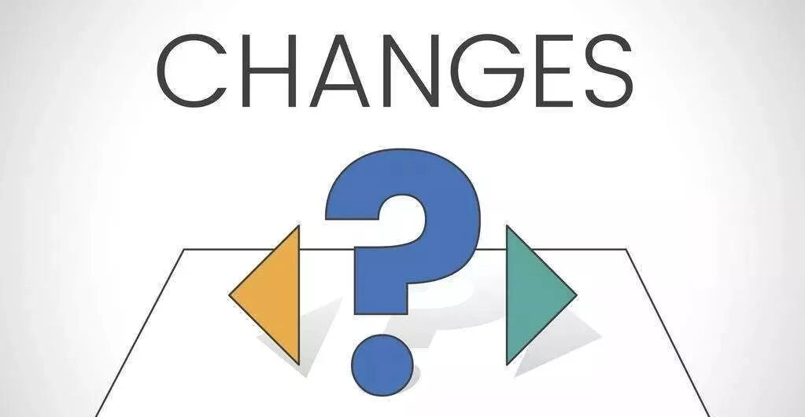

Time: 19:30-21:30, Friday, 1st Dec
Venue: Room A208, New Main Building, Beihang University
---------------------------------------------------------------------------------------------------------------
table topic
choice

TTM:Carrie
TM:Frank
Go or stay where you are, as you choose.All endings are beginnings, we just don't know it at the time.Carrie can't tell you the way you should choose, but she will tell you how to choose.
-------------------------------------------------------------------------------
备稿演讲部分
Joshua
Keep it a secret, joshua want to say some words that you may never see on TV. Even though I have no idea about what he ganna share, I still believe he is the one to set your fire.
-------------------------------------------------------------------------------
Evaluation team
GE: Chad
Timer: May
Ah- counter：Peter
Quizmaster:Kaisense
周五晚上，我们一同见证~~
What is Toastmasters?
Toastmasters International (TI) is a non-profit educational organization that operates clubs worldwide for thepurpose of helping members improve their communication, public speaking, and leadership skills.

https://mp.weixin.qq.com/s/UGKGTGx2_Xrm0IkG73KigQ
本页为抢救式本地归档，图文已永久保存。